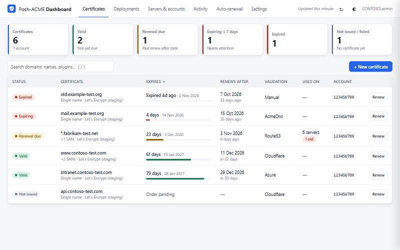
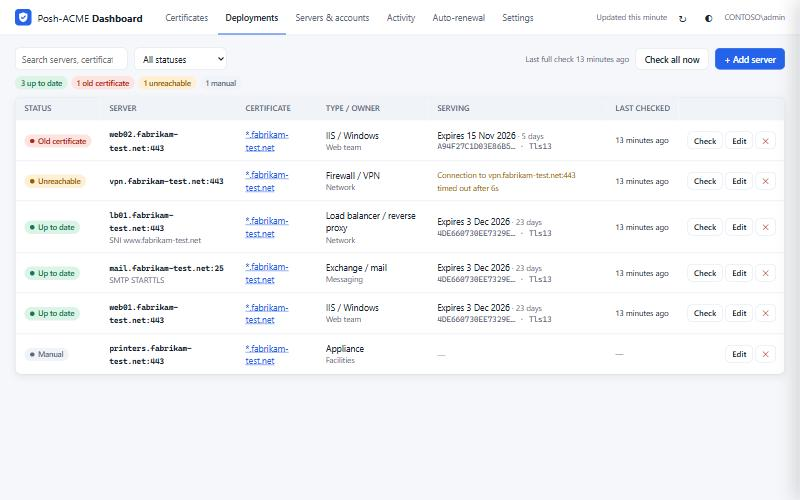

See every certificate. Catch the server that didn't get the new one.
A self-hosted web dashboard for Posh-ACME. It shows the status of every certificate, renews them from the browser, and checks which certificate your servers are actually serving.
Install View the source
What it does
PowerShell and static files only: no extra modules, no Node, nothing loaded from a CDN.
Status at a glance
Every order across all ACME servers and accounts, with days left, renew-after dates and validation plugin.
Actions with a live log
Renew, revoke, delete and request certificates. They run in the background, and the log follows along.
GoDaddy template
Preset for DNS validation, reuse of saved credentials, and a read-only credentials test before you request.
Email alerts
Expiry warnings and a daily or weekly digest through Microsoft 365, using OAuth with no SMTP password.
Shared and access-controlled
One instance for the team, with Windows sign-in and full or view-only access by AD user or group.
Auto-renewal check
Finds your Submit-Renewal tasks, shows their last result, and warns when there are none.
Know where each certificate is used
A wildcard certificate can end up on many servers, and renewing it doesn't update them. List where it's installed, and the dashboard connects to each one to read the certificate it presents.
- Flags servers still on the old certificate as soon as it renews
- Works over TLS and SMTP with STARTTLS
- Read-only, with no credentials needed on the servers

Safe to try
Read-only mode locks the whole dashboard down, in the server and not only in the page.
No changes
Renewals, revocations, settings edits, emails and server checks are all switched off.
Config untouched
Posh-ACME only sees an empty temporary folder. Your real config is read with plain file reads.
One exception
A GoDaddy credentials test that sends only GET requests. Nothing you type is saved.
Install
Needs Windows, PowerShell 5.1 or 7, and Posh-ACME 4.x.
Try it on your own machine first, without installing anything:
git clone https://github.com/zoutbot-cpu/posh-acme-dashboard
cd posh-acme-dashboard
.\Start-PoshAcmeDashboard.ps1 -ReadOnly -OpenBrowserTo share it with your team, run the installer from an elevated prompt. Add -WhatIf to preview every step.
.\Install-PoshAcmeDashboard.ps1 -ServiceAccount 'CONTOSO\svc-acme' -ListenAddress + `
-AllowedPrincipals 'CONTOSO\PKI Admins' -CertThumbprint <thumbprint>Run it as the Windows account that owns your Posh-ACME config. See the README for the details.
-ReadOnly and staging.